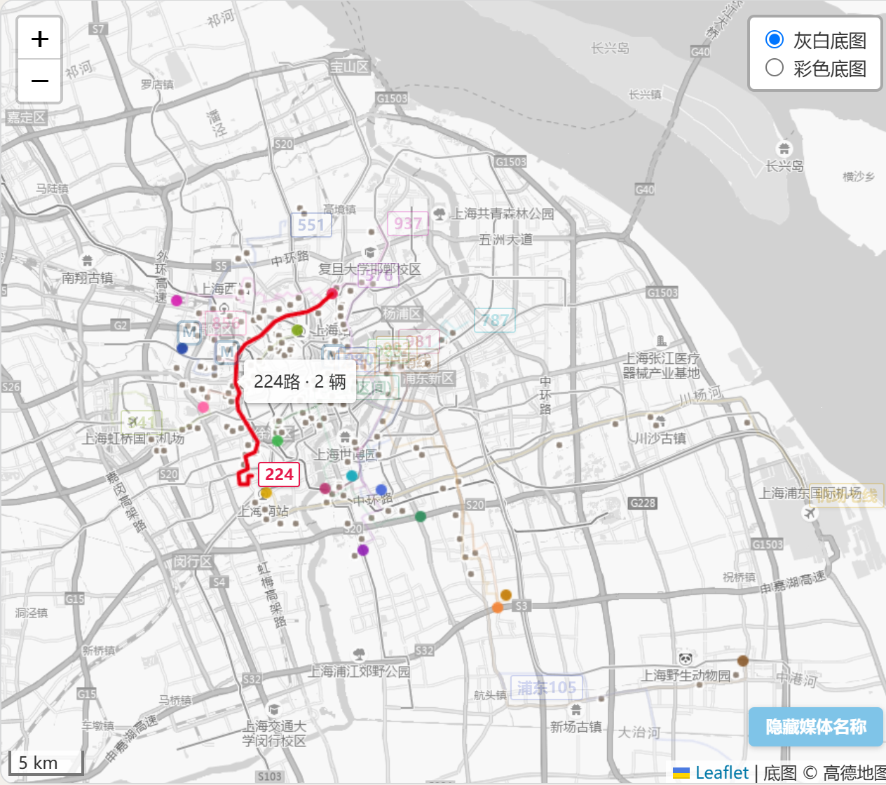

1六步，从客户需求到提案 全程自动，销售只管确认
读懂需求
贴一段客户邮件或口述，自动读出行业、预算、档期
客户 brief找到门店
自动找出品牌的全部门店，或客户给的地址
大数据平台找附近广告位
门店 500 米内经过的公交，800 米内的地铁口
大数据平台查有没有空
整段档期每天都有空才算数，绝不卖重
红豆系统挑最划算的
预算内优先选人多、离门店近的，尽量多覆盖门店
自动组合一键出提案
报价、上刊时间都算好，生成给客户看的网页
断网也能打开以乐高乐园、500 万预算为例，一层层筛下来：
942个亲子聚集点
926个附近广告位
834个档期内有空
19个最终入选
2真实地图上看组合 彩色 = 选中线路，悬停变红线

高德底图 + 平台线路轨迹，线宽随缩放变化；灰白 / 彩色底图可切换，终点标线路号，地铁口标 M。
3交给客户前，自己先查一遍 10 项全过才算好提案
- 客户是谁、要做什么，一句话说清
- 预算、档期、媒体，一项不漏
- 每条线路为什么选，都有依据
- 主力和辅助分清，说得出取舍
- 钱花在哪，一笔一笔列清楚
- 排的档期，红豆里真的有空
- 效果怎么算、怎么监测，写明白
- 出错、下雨误工，都有补救办法
- 改预算只增减几条，不用重做
- 网页提案，现场就能点开改
主视觉由 AI 生成（gpt-image-2-4k），其余画面为工作台实时截图